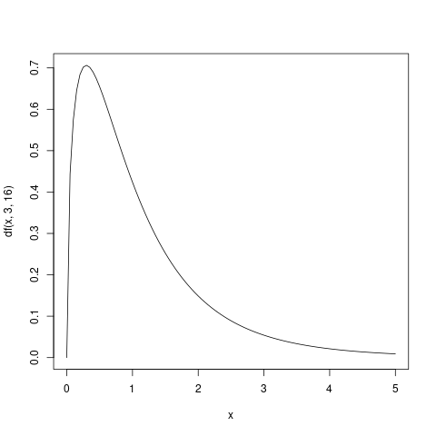

7章 分散分析
7.0 分散分析 (anova, Analysis Of Variance)
3つ以上の 平均値を比較する ために，分散分析を紹介する
- 分散分析の考え方の基礎，「平方和の分解」
- 要因の数の違い，
- 標本の対応の有無による違い，がある
変動の区別
全体の変動
- 全データをまとめて扱う
- 全平均 と 個々のデータの偏差，分散
方法 (要因) の違いによる変動
- 方法ごとにグループを作成
- 全平均 と グループ内平均との偏差，分散
- 同じ方法で処方レベルの違い
個の違いによる変動 (誤差)
- 同じ方法グループ内のデータの変動は，個々の違いが原因。
- 方法の効果を見るためには，雑音と考える。
分散分析
全体の変動 = 方法 (要因)による変動 + 個の違いによる変動 となる。
要因毎にわけ，誤差に較べて大きな影響を与えている要因を探す。
7.1 一元配置分散分析
一つの要因の分析を行なう。
指導法データの準備
(指導法データ <- read.csv("data/shidouhouU8.csv")) class(指導法データ) str(指導法データ)
SID name sex math stat psych_test stat_test1 stat_test2 method 1 1 大村 男 嫌い 好き 13 6 10 C 2 2 本多 男 嫌い 好き 14 10 13 B 3 3 川崎 男 好き 好き 7 6 8 B 4 4 多村 男 好き 好き 12 10 15 A 5 5 松中 男 嫌い 嫌い 10 5 8 B 6 6 小久保 男 嫌い 嫌い 6 3 6 C 7 7 柴原 男 嫌い 嫌い 8 5 9 A 8 8 井手 男 嫌い 嫌い 15 9 10 D 9 9 田上 男 嫌い 嫌い 4 3 7 D 10 10 松田 男 好き 嫌い 14 3 3 D 11 11 高谷 女 好き 好き 9 11 18 A 12 12 杉内 女 嫌い 好き 6 6 14 A 13 13 和田 女 好き 好き 10 11 18 A 14 14 新垣 女 嫌い 嫌い 12 9 11 C 15 15 大隣 女 嫌い 好き 5 7 12 B 16 16 水田 女 好き 嫌い 12 5 5 D 17 17 斉藤 女 嫌い 嫌い 8 8 7 C 18 18 柳瀬 女 嫌い 嫌い 8 7 12 C 19 19 佐藤 女 嫌い 嫌い 12 7 7 B 20 20 馬原 女 嫌い 嫌い 15 9 7 D [1] "data.frame" 'data.frame': 20 obs. of 9 variables: $ SID : int 1 2 3 4 5 6 7 8 9 10 ... $ name : Factor w/ 20 levels "井手","高谷",..: 14 18 12 13 6 5 4 1 16 7 ... $ sex : Factor w/ 2 levels "女","男": 2 2 2 2 2 2 2 2 2 2 ... $ math : Factor w/ 2 levels "嫌い","好き": 1 1 2 2 1 1 1 1 1 2 ... $ stat : Factor w/ 2 levels "嫌い","好き": 2 2 2 2 1 1 1 1 1 1 ... $ psych_test: int 13 14 7 12 10 6 8 15 4 14 ... $ stat_test1: int 6 10 6 10 5 3 5 9 3 3 ... $ stat_test2: int 10 13 8 15 8 6 9 10 7 3 ... $ method : Factor w/ 4 levels "A","B","C","D": 3 2 2 1 2 3 1 4 4 4 ...
(As <- subset(指導法データ, method=="A")$stat_test2) (Bs <- subset(指導法データ, method=="B")$stat_test2) (Cs <- subset(指導法データ, method=="C")$stat_test2) (Ds <- subset(指導法データ, method=="D")$stat_test2) (統計テスト2 <- c(As, Bs, Cs, Ds)) (指導法 <- c(rep("A",5),rep("B",5),rep("C",5),rep("D",5))) (指導法2 <- factor(指導法)) # 要因型ベクトルに変換
[1] 15 9 18 14 18 [1] 13 8 8 12 7 [1] 10 6 11 7 12 [1] 10 7 3 5 7 [1] 15 9 18 14 18 13 8 8 12 7 10 6 11 7 12 10 7 3 5 7 [1] "A" "A" "A" "A" "A" "B" "B" "B" "B" "B" "C" "C" "C" "C" "C" "D" "D" "D" "D" [20] "D" [1] A A A A A B B B B B C C C C C D D D D D Levels: A B C D
指導法を受けている全ての人を母集団とし，その母集団において，指導法ごと に求めたテスト得点の平均値に違いがあるかを知りたい。
この20人のデータは，母集団からの無作為抽出標本です。
この標本が，母平均の等しい4群 (A,B,C,Dの指導法ごとの) から抽出された可 能性が高いかを検討する。
そのための検定が，*分散分析* です。
検定の流れ
帰無仮説と対立仮説の設定
- 帰無仮説 \(H_0\)
- 4群の母平均は等しい
- 対立仮説 \(H_2\)
- 4群の母平均は等しくない
検定統計量
\( F = \frac { \mbox{群間平方和} / \mbox{群間の自由度} } { \mbox{群内平方和} / \mbox{群内の自由度} } \)
\( F \) は，全ての群の母平均が等しいときに，* F分布 * に従う
- 群間平方和
- 全体平均値と群間平均値の差の2乗和, 自由度 (4ー1)
- 群内平方和
- 群内平均値との差の2乗和， 自由度 4*(5ー1)
F-分布の確率密度関数
curve(df(x, 3, 16),0, 5)

有意水準 \(\alpha\) の決定
\( \alpha=0.05 \) の片側検定， F値は正値。
統計検定量の実現値の計算
- oneway.test 関数
一元配置分散分析のみ実行可能
# var.equal=TRUEにより母分散の等質性を仮定 oneway.test(統計テスト2 ~ 指導法2, var.equal=TRUE )
One-way analysis of means data: 統計テスト2 and 指導法2 F = 7.1111, num df = 3, denom df = 16, p-value = 0.002988
p-値が，0.002988 であるので，帰無仮説を棄却。
- aov 関数
最も一般的
aov(統計テスト2 ~ 指導法2)
Call: aov(formula = 統計テスト2 ~ 指導法2) Terms: 指導法2 Residuals Sum of Squares 184 138 Deg. of Freedom 3 16 Residual standard error: 2.936835 Estimated effects may be unbalancedsummary(aov(統計テスト2 ~ 指導法2))
One-way analysis of means data: 統計テスト2 and 指導法2 F = 7.1111, num df = 3, denom df = 16, p-value = 0.002988
p-値が，0.002988 であるので，帰無仮説を棄却。
- anova関数
複数のモデルの比較など，高度な分析に対応
anova(lm(統計テスト2 ~ 指導法2))
Analysis of Variance Table Response: 統計テスト2 Df Sum Sq Mean Sq F value Pr(>F) 指導法2 3 184 61.333 7.1111 0.002988 ** Residuals 16 138 8.625 --- Signif. codes: 0 ‘***’ 0.001 ‘**’ 0.01 ‘*’ 0.05 ‘.’ 0.1 ‘ ’ 1p-値が，0.002988 であるので，帰無仮説を棄却。
Rによる変動と検定値の計算
全データ <- cbind(As, Bs, Cs, Ds) 群平均 <- colMeans(全データ) # 水準ごとの平均のベクトル # 水準ごとの平均のベクトルを行数だけ並べた行列を作る 群平均行列 <- matrix(rep(群平均, nrow(全データ)), nrow=nrow(全データ), ncol=ncol(全データ),byrow=TRUE) 群内 <- 全データ - 群平均行列 # 各データと、その群内の平均との差 群内平方和 <- sum(群内^2) # 群内平方和 分母 <- 群内平方和 / ( (nrow(全データ)-1)*ncol(全データ) )
全体差
(全体差 <- 全データ - 全平均) # 行列 - スカラ
As Bs Cs Ds
[1,] 5 3 0 0
[2,] -1 -2 -4 -3
[3,] 8 -2 1 -7
[4,] 4 2 -3 -5
[5,] 8 -3 2 -3
群間差
群平均行列 から 全平均を引く
(群間差 <- 群平均行列 - 全平均)
[,1] [,2] [,3] [,4]
[1,] 4.8 -0.4 -0.8 -3.6
[2,] 4.8 -0.4 -0.8 -3.6
[3,] 4.8 -0.4 -0.8 -3.6
[4,] 4.8 -0.4 -0.8 -3.6
[5,] 4.8 -0.4 -0.8 -3.6
群内差
全データから各群内平均を引く
(群内差 <- 全データ - 群平均行列)
As Bs Cs Ds
[1,] 0.2 3.4 0.8 3.6
[2,] -5.8 -1.6 -3.2 0.6
[3,] 3.2 -1.6 1.8 -3.4
[4,] -0.8 2.4 -2.2 -1.4
[5,] 3.2 -2.6 2.8 0.6
平方
全体差^2 群間差^2 群内差^2
As Bs Cs Ds
[1,] 25 9 0 0
[2,] 1 4 16 9
[3,] 64 4 1 49
[4,] 16 4 9 25
[5,] 64 9 4 9
[,1] [,2] [,3] [,4]
[1,] 23.04 0.16 0.64 12.96
[2,] 23.04 0.16 0.64 12.96
[3,] 23.04 0.16 0.64 12.96
[4,] 23.04 0.16 0.64 12.96
[5,] 23.04 0.16 0.64 12.96
As Bs Cs Ds
[1,] 0.04 11.56 0.64 12.96
[2,] 33.64 2.56 10.24 0.36
[3,] 10.24 2.56 3.24 11.56
[4,] 0.64 5.76 4.84 1.96
[5,] 10.24 6.76 7.84 0.36
平方和と自由度とF-値
群間平方和 <- sum(群間差^2) 群内平方和 <- sum(群内差^2) 全体平方和 <- 群間平方和 + 群内平方和 (群間自由度 <- ncol(全データ)-1) (群内自由度 <- (nrow(全データ)-1) * ncol(全データ)) (全体自由度 <- length(全データ)-1 ) 全体自由度 - 群間自由度 - 群内自由度 (群間平均平方 <- 群間平方和/群間自由度) (群内平均平方 <- 群内平方和/群内自由度) (全体平均平方 <- 全体平方和/全体自由度) (F <- 群間平均平方 / 群内平均平方)
[1] 3 [1] 16 [1] 19 [1] 0 [1] 61.33333 [1] 8.625 [1] 16.94737 [1] 7.111111
7.1.3 多重比較 (Tukey の方法)
7.1.1項の帰無仮説の棄却では，4つの群の母平均が等しくないことは分 るが，どの群に間に差があるのかは分らない。
どの群に間に差があるのかを調べるために，* 多重比較 * とよばれる方 法を使う。
ここでは，Tukeyの方法について説明する。
検定統計量 q
各群のデータ数と分散が等しいと仮定します。
\[ q = \frac { | \textrm{比較する群の平均値差} | } { \sqrt{\textrm{群内の平均平方} / \textrm{各群のデータ数} }} \]
((s-:)) q は t-検定(分散が同じ2群の平均値の差の検定)に似ている
データの準備
指導法データ <- read.csv("data/shidouhouU8.csv")
(As <- subset(指導法データ, method=="A")$stat_test2)
(Bs <- subset(指導法データ, method=="B")$stat_test2)
(Cs <- subset(指導法データ, method=="C")$stat_test2)
(Ds <- subset(指導法データ, method=="D")$stat_test2)
(全データ <- cbind(As, Bs, Cs, Ds))
(指導法 <- 指導法データ$method)
# (指導法2 <- factor(指導法)) # 要因ベクトルに変換，違いがないような。。。
(統計テスト2 <- 指導法データ$stat_test2)
統計検定値 q の実現値値
(q <- abs(mean(As)-mean(Ds)) / sqrt(群内平均平方/nrow(全データ)))
[1] 6.395651
棄却域の決定
有意水準 5%, 平均値の数 4, 群内自由度 16，を指定します。
qtukey(0.95, 4, 16)
qtukey(0.05, 4, 16, lower.tail=FALSE)
[1] 4.046093 [1] 4.046093
どちらも4.046093となり，棄却域は \( q > 4.046093 \) となります。
TukeyHSD (Honest Significant Difference)
TukeyHSD(aov(統計テスト2 ~ 指導法))
Tukey multiple comparisons of means
95% family-wise confidence level
Fit: aov(formula = 統計テスト2 ~ 指導法)
$指導法
diff lwr upr p adj
B-A -5.2 -10.514108 0.1141085 0.0562227
C-A -5.6 -10.914108 -0.2858915 0.0371222
D-A -8.4 -13.714108 -3.0858915 0.0017736
C-B -0.4 -5.714108 4.9141085 0.9963241
D-B -3.2 -8.514108 2.1141085 0.3446966
D-C -2.8 -8.114108 2.5141085 0.4561325
7.2 一元配置分散分析 (対応あり)
一元配置分散分析 (対応あり)では、
- 同じ被験者が
- 複数の条件を経験する
などの対応のあるデータを対象とする。
例題
以下の表は5名の学生に、線形代数、微分積分、確率統計に対する好意度 の評定データである。 これら3つの科目に対する好意度に差があるだろ うか？（念のため：これは１要因３水準)
| 学生 | 線形代数 | 微分積分 | 確率統計 |
|---|---|---|---|
| 田中 | 7 | 5 | 8 |
| 岸 | 8 | 4 | 6 |
| 大引 | 9 | 7 | 7 |
| 吉川 | 5 | 1 | 2 |
| 荻野 | 6 | 3 | 5 |
対応がないものとして分散分析してみる
仮説
- 帰無仮説 H_0
- 3科目の好感度の母平均は等しい
- 対立仮説 H_1
- 3科目の好感度の母平均は等しくない
検定統計量 F ::
\[ F = \frac { \mbox{群間平方和} / \mbox{群間の自由度} } { \mbox{群内平方和} / \mbox{群内の自由度} } \] (mboxが出力されていませんので，教科書を参照)
\( F \) は，全ての群の母平均が等しいときに，* F分布 * に従う
- 群間平方和
- 全体平均値と群間平均値の差の2乗和
- 群内平方和
- 群内平均値との差の2乗和
対応がないものとして実行
好意度 <- c(7,8,9,5,6,5,4,7,1,3,8,6,7,2,5) 科目 <- factor(c(rep("線形代数",5),rep("微分積分",5),rep("確率統計",5))) summary(aov(好意度~科目)) # 好意度を科目の観点から分析する
Df Sum Sq Mean Sq F value Pr(>F)
科目 2 22.53 11.267 2.641 0.112
Residuals 12 51.20 4.267
結果
- F値
- 2.641
- p値
- 0.1121 > 0.05
p値か 5%水準より大きいため, 有意な差は認められない。 帰無仮説を採択。
7.2.2 一元配置分散分析 (対応あり)の実行
仮説
- 帰無仮説 H_0
- 3科目の好感度の母平均は等しい
- 対立仮説 H_1
- 3科目の好感度の母平均は等しくない
検定統計量 F
\[ F = \frac { \mbox{条件平方和} / \mbox{条件の自由度} } { \mbox{残差平方和} / \mbox{残差の自由度} } \]
\( F \) は，全ての群の母平均が等しいときに，* F分布 * に従う
- 残差平方和
- 全体平均値と群間平均値の差の2乗和
- 条件平方和
- 群間平方和と同じ
検定統計量の実現値
aov(好意度 ~ 科目 + 人) summary(aov(好意度 ~ 科目 + 人))
Call:
aov(formula = 好意度 ~ 科目 + 人)
Terms:
科目 人 Residuals
Sum of Squares 22.53333 45.06667 6.13333
Deg. of Freedom 2 4 8
Residual standard error: 0.875595
Estimated effects may be unbalanced
Df Sum Sq Mean Sq F value Pr(>F)
科目 2 22.53 11.267 14.7 0.002095 **
人 4 45.07 11.267 14.7 0.000931 ***
Residuals 8 6.13 0.767
---
Signif. codes: 0 ‘***’ 0.001 ‘**’ 0.01 ‘*’ 0.05 ‘.’ 0.1 ‘ ’ 1
結果
科目の違いによる平均値差の検定をおこないたかったので， 科目の行を見ます。F-値が14.7， p-値が\( 0.002 < 0.05 \) で， 帰無仮説は棄却されます。
人の行では，人による好感度の差が有意であると示されています。
Fは，分子の自由度が2, 分母の自由度が8のF-分布に従います。
Error 項を指定した分散分析
Error 項を指定して分散分析を実行しても同じ結果になります:
summary(aov(好意度 ~ 科目 + Error(人/科目)))
Error: 人
Df Sum Sq Mean Sq F value Pr(>F)
Residuals 4 45.07 11.27
Error: 人:科目
Df Sum Sq Mean Sq F value Pr(>F)
科目 2 22.533 11.267 14.7 0.0021 **
Residuals 8 6.133 0.767
---
Signif. codes: 0 ‘***’ 0.001 ‘**’ 0.01 ‘*’ 0.05 ‘.’ 0.1 ‘ ’ 1
# Tukey の多重比較
TukeyHSD(aov(好意度 ~ 科目 + 人))
Tukey multiple comparisons of means
95% family-wise confidence level
Fit: aov(formula = 好意度 ~ 科目 + 人)
$科目
diff lwr upr p adj
線形代数-確率統計 1.4 -0.182381 2.982381 0.0811694
微分積分-確率統計 -1.6 -3.182381 -0.017619 0.0477167
微分積分-線形代数 -3.0 -4.582381 -1.417619 0.0016141
$人
diff lwr upr p adj
岸-荻野 1.3333333 -1.1365377 3.8032044 0.4036928
吉川-荻野 -2.0000000 -4.4698711 0.4698711 0.1226987
大引-荻野 3.0000000 0.5301289 5.4698711 0.0186089
田中-荻野 2.0000000 -0.4698711 4.4698711 0.1226987
吉川-岸 -3.3333333 -5.8032044 -0.8634623 0.0102769
大引-岸 1.6666667 -0.8032044 4.1365377 0.2282769
田中-岸 0.6666667 -1.8032044 3.1365377 0.8766404
大引-吉川 5.0000000 2.5301289 7.4698711 0.0007714
田中-吉川 4.0000000 1.5301289 6.4698711 0.0033834
田中-大引 -1.0000000 -3.4698711 1.4698711 0.6448878
# 個人の比較には興味がないので，科目についてのみ多重比較
TukeyHSD(aov(好意度 ~ 科目 + 人), "科目")
Tukey multiple comparisons of means
95% family-wise confidence level
Fit: aov(formula = 好意度 ~ 科目 + 人)
$科目
diff lwr upr p adj
線形代数-確率統計 1.4 -0.182381 2.982381 0.0811694
微分積分-確率統計 -1.6 -3.182381 -0.017619 0.0477167
微分積分-線形代数 -3.0 -4.582381 -1.417619 0.0016141
参考: 3群以上を比較するとき、2群間の検定（T検定）を使ってはいけない理由
いま、A,B, Cという3つの群があったとします。そこで、2群間の検定を A-B間、 B-C間、C-AC間で有意水準5%で行ったとします。
ここで、「この組み合わせの少なくとも１つは有意差がある」 となる確率を
計算すると(実際にその間に有意差があるなしに拘らず)、 1-(1-0.05)*(1-0.05)*(1-0.05) = 0.14 となります。つまり、 有意水準 5% (=0.05)で検定したつもりが、 この方法では実質的に 14 %で検定している、 つまり 検定力が低下してしまう、というのが理由です。